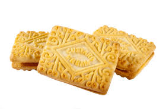

A Wikipedia description of a Custard Cream can be seen here:
"A custard cream is a type of biscuit popular in the United Kingdom and Republic of Ireland. Its structure is that of a sandwich, with a creamy, custard-flavoured centre between two flat biscuit layers.Traditionally, the filling was buttercream (which is still used in home-made recipes) but nowadays cheaper fats have replaced butter in mass-produced biscuits. The filling tastes of vanilla and as such is more akin to the taste of custard made with custard powder than egg custard. It is believed that the custard cream biscuit originated in Britain in 1908.
They usually have an elaborate baroque design stamped onto them, originating in the Victorian era and representing ferns factory in Carlisle."
Around 500 people a year need hospital treatment because of biscuit injuries.
The first Custard Cream was created in 1908!
| Main Flavour | Custard |
| Filling? | Yes- Custard flavour |
| Best Paired With | Strong Cup of Tea |
| Price Point | $ |
| Suitable for vegetarians? | Yes! |